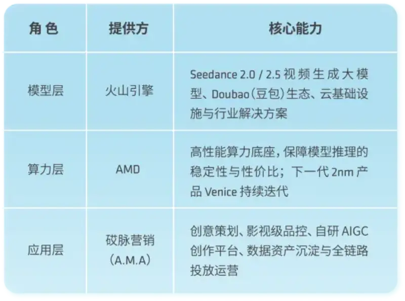
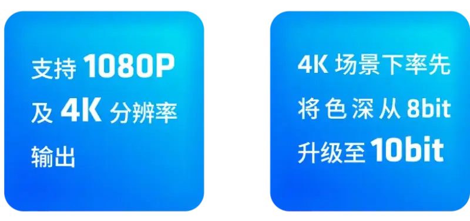
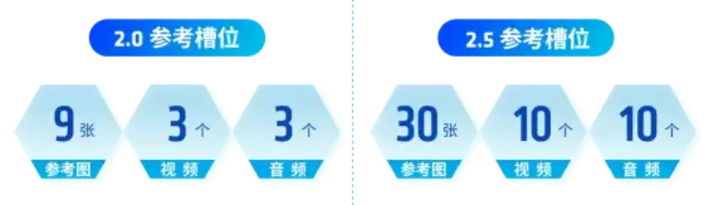

portant;">
portant;">In a car ad, you see only tens of seconds of footage, but behind it can be a hard production schedule and high cost. One script supports only a single day of shooting. When the client changes the car model, the pace, or the creative at the last minute, the production team is left exposed. Ads built around a star-player IP often cost a million and take weeks or months. The traditional automotive TVC model of heavy assets, heavy spend, long cycles, and low flexibility struggles to chase fast-moving events such as the World Cup at high frequency. Worse, the finished film is often discarded after use and cannot become a brand asset. High cost, low efficiency, and limited creativity are the three barriers that automotive marketing must break through.
portant;">Now, on the basis of Volcengine Seedance 2.0 and the AMD computing foundation, AMD, Volcengine, and Guangdong Aimai Digital Marketing (A.M.A) have worked together to break these barriers. They built a series of star-player IP ads for automotive brands during the 2026 World Cup. This is a new AI mass-production model in which a big-name star IP ad goes viral without a real shoot. It shows the threefold advantage of Volcengine model capability plus the AMD compute foundation plus A.M.A industry delivery, across performance, cost, and efficiency.
portant;">
portant;">Three-way collaboration builds three advantages, making brand communication unbreakable
portant;">
portant;">

portant;">Advantage 1 | Volcengine Seedance 2.0 / 2.5: cinematic quality and industrial mass production
portant;">For the high quality control of automotive marketing, Volcengine upgraded Seedance in four ways:
portant;">1. High resolution plus high color depth: the final film is clearer and the color more vivid, meeting the commercial announcement quality standard of car makers.
portant;">

portant;">2. Unified multimodal reference: Seedance 2.0 supports text-to-video, image-to-video, and combined generation of text, image, and audio. Ideas can be quickly brainstormed and made concrete, so creative becomes reality efficiently.
portant;">3. Precise generation of complex structures: Seedance 2.5 greatly increases the reference slots. It supports a white-model video to lock the product structure, then generates the detailed final film.
portant;">

portant;">4. Version matrix plus stable mass production: the standard, Fast, and Mini editions fit different budgets. The 2.5 edition reduces random rerolls and raises the first-pass success rate, which secures stable industrial production and improves ROI.
portant;">Advantage 2 | A.M.A: creative quality control and data-asset accumulation
portant;">As an integrated marketing company that is a back-end tech agency skilled in brand work, A.M.A AI production team all come from creative, art, and editing backgrounds. They combine creative, taste, and technology, and they avoid the cheap look of AI content from the start.
portant;">With its dual official status as an Ocean Engine ad agency and a Volcengine channel partner, A.M.A built a closed loop from creative planning and video production to delivery. It started its digital transformation in 2021 and built a data-asset library of documents, materials, and experience. This lets it reuse assets and run for the long term, breaking the weakness of AI marketing as one-off output that is discarded after use.
portant;">Its self-built AIGC platform organizes the creative workflow as nodes on a canvas. Seedance plugs in as a node and supports concurrent generation of ten to hundreds of tasks. A built-in asset library and skill library hold senior creators experience as reusable digital assets for the whole team and newcomers. The tech team works on the front line and fully understands the production chain of taking a brief, writing a script, making shots, and assembling the film before it designs abstractions. This ensures the tech really lands in the business and the creative work.
portant;">Advantage 3 | AMD compute foundation: stable support and maximum ROI
portant;">The model sets the ceiling of content quality, and compute sets the floor for high-definition mass production. Cinematic automotive AI content must carry moving images, 4K detail, and synchronized dynamic rendering of car and person, which demands production-grade precision, duration, and stability from the compute.
portant;">AMD and Volcengine have long worked together. The compute foundation keeps the business stable and gives cost-effective compute for Seedance inference. As compute cost keeps improving, clients can try more rounds of creative on the same budget, which lifts output and ROI. In the second half of the year, AMD will also launch Venice, its next product on a 2nm process, to keep supporting Volcengine and its clients with better compute.
portant;">
portant;">The iron triangle of automotive brand communication: four gains that reshape marketing efficiency
portant;">
portant;">For the 2026 World Cup marketing window, A.M.A, on Volcengine Seedance 2.0 and the AMD compute foundation, built several star-player IP works for automotive clients in warm, playful, and anthem styles. It set a benchmark for AI sports marketing and celebrity IP marketing. It became a new model for automotive brand communication and delivered multiple gains.
portant;">Lower cost: a million-scale star IP TVC made with AI matches the quality of a real shoot at a much lower cost.
portant;">Shorter cycle: from about two months to within two weeks. A small scope, short cycle, and small budget can drive large-scale marketing buzz.
portant;">Higher output: a several-fold to ten-fold rise. Scenes such as city running, off-road, smart parking, and urban driving adapt fast by swapping the car subject. Creation is free of time and space, and content can chase trends and be distributed at high frequency.
portant;">Asset accumulation: the data-asset library and skill library make every creative experience reusable and transferable. This builds long-term compounding of brand assets instead of one-off content that is discarded after use.
portant;">When the model, compute, and industry delivery form a full-loop automotive AI marketing ecosystem, the industrial mass production of high-performance, cost-effective, and stable AI content is no longer a vision. It becomes the new normal for brands to cut cost, raise efficiency, and accumulate assets.